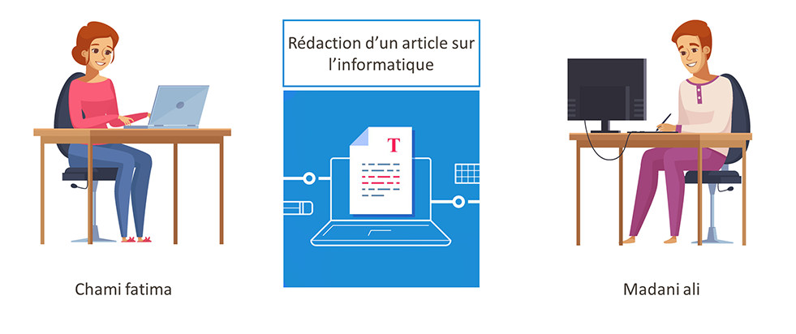
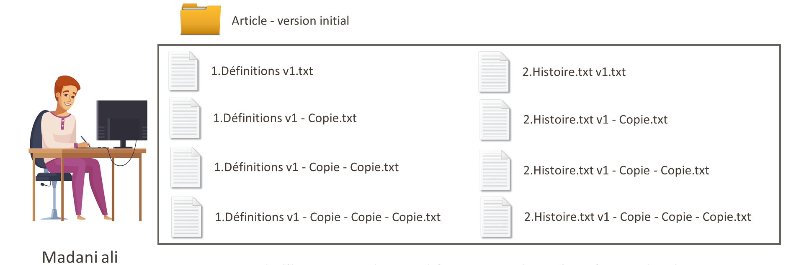
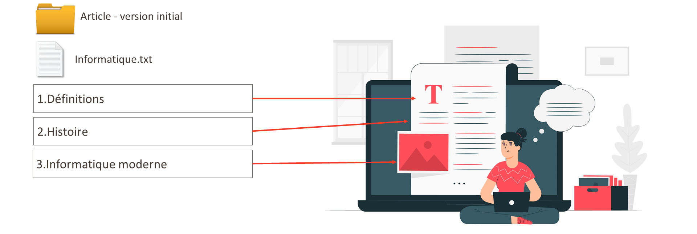
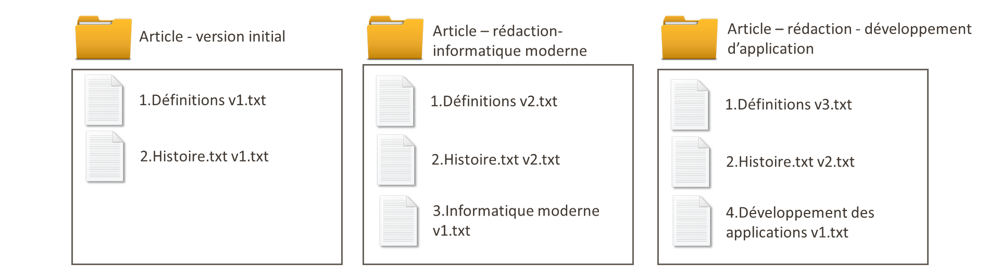
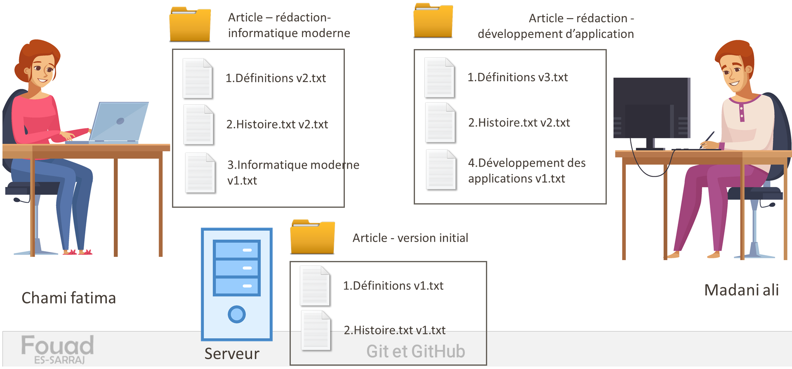
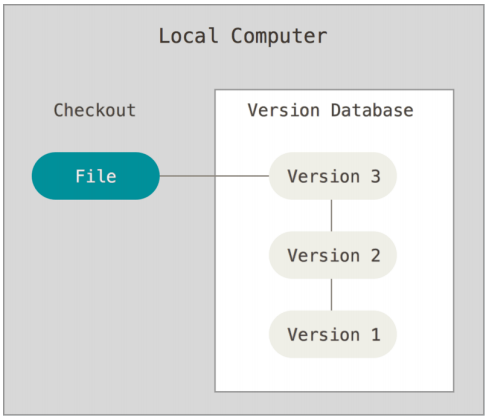
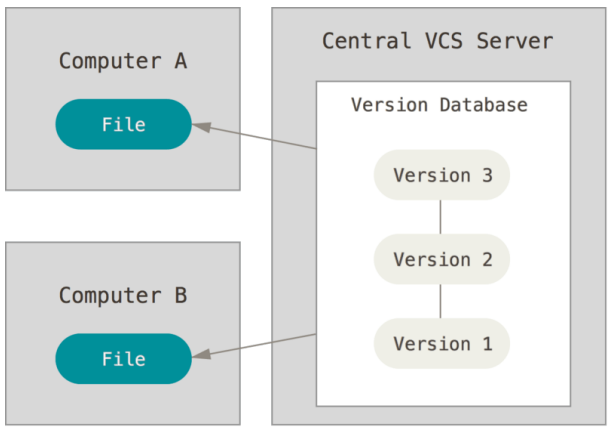
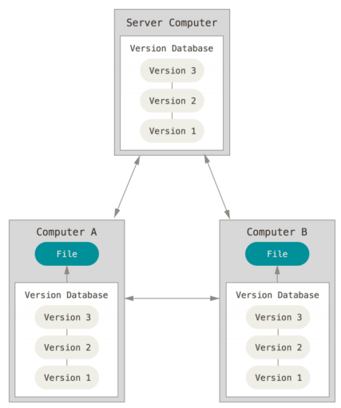

Gestion de version
C’est quoi une gestion de version
C’est un système qui enregistre l’historique des modifications d’un fichier ou d’un ensemble des fichiers au cours du temps
de manière à ce qu’on puisse revenir à une version antérieure d’un fichier à tout moment.

Situation de travail et problèmes
Pour vous expliquer la problématique de gestion de version, nous considérons la situation de travail suivante :
Madani Ali veut rédiger un article sur l’informatique en collabortion avec Chami Fatima.

Pendant cette situation de travail Madani Ali a vécu trois problèmes que nous allons découvrir dans cette session de formation.
Problème 1 – gestion d’historique des modifications
Au début du travail, Madani ali a crée un répertoire nommé « Article –version initial ». Il a décider de rédiger chaque partie de son article dans un fichier indépendante pour faciliter la gestion de traçabilité de ses modification.
Il a créé un fichier texte nommé 1.définition v1.txt pour rédiger la partie 1.définition de l’informatique.

Après la rédaction et la modification de son définition, il a décidé de changer carrément la définition tout en gardant la possibilité de revenir en arrière.
Pour réaliser ça, il a créé un copie de son fichier « Définition v1 », et il a continué de rédiger dans le fichier actuel.
Ensuite, il a répété ce scenario plusieurs fois quand ’il a voulu garder la version antérieur de son travail.
À un moment donnée,Madani Ali avait plusieurs définition enregistrer dans plusieurs fichiers, Aussi, il a répéter ce mécanisme pour la rédaction des autres parties de son article.
La question qui se pose ici, est ce que Madani Ali peut facilement revenir en arrière à une modification ou une partie rédigé précédemment ?
Pour faire ça il doit garder l’ensemble de ces fichier et chercher et lire manuellement dans tous les fichiers pour trouver la version qu’il veut récupérer.
Imaginer le problème si Madani Ali a plus de 10 parties de son projet de rédaction, c’est-à-dire il doit gérer et chercher dans plus de 100 fichier texte.

Imaginer le problème si Madani Ali n’a pas décider de travailler avec les fichiers et il a travaillé avec un seul fichier qui contient plusieurs partie.
Problème 2 – fusion de travail avec plusieurs versions
Après deux semaine de repos, Madani Ali, a voulu de continuer son travail mais sans impacter le travail précédent.
Il a décidé de créer un autre répertoire nommé « Article – rédaction informatique moderne » pour rédiger la partie « Informatique moderne » Mais, pendant la rédaction il a changé aussi la partie définition et la partie histoire,
Ensuite à moment donnée, il a créé un troisième répertoire pour ajouter la partie « Développement des applications ».

La question ici, combien de temps pour fusionner les travaux réalisés dans les deux répertoire, dans le répertoire initial , sans risque de perte de données en remplaçant les versions récentes par des enceins versions.
Problème 3 – Travail collaborative et fusion
Maintenant, si Madani Ali est capable de gérer tous ces fichiers de façon manuel, et il a le temps et l’énergie de faire ce travail pébible,
Quand’il veut travailler avec fatima en partagent son répertoire avec lui via un serveur de partage des fichiers, cependant on aura trois version de projet
Version local chez madani ali Version local chez chami fatima Et version dans le serveur.

La question ici, comment travailler ensemble sans perte de données avec la résolution du problème de conflit s’il ont modifié par accident le même contenue.
Travail de gestion de version
Une application de gestion de version va nous aider à gérer les problématiques des situations que nous avons déjà discuté, tout en répandant à quatre questions :
- Quand ? Quand est-ce que le fichier a été modifié ?
- Quoi ? Qu’est-ce qui a changé dans le fichier ?
- Pourquoi ? Pourquoi le fichier a-t-il été modifié ?
- Qui ? Par qui a été modifié le fichier ?
Les systèmes de gestion de version locaux
Dans les applications de gestion de version il y a trois façons d’enregistrer l’historique des modifications.
La première façon et la gestion de version local. C’est-à-dire tous les enregistrements des versions ou des modifications sont enregistrer dans un répertoire ou une base de données local.

Les systèmes de gestion de version centralisés
La deuxième façon est d’enregistrer les modifications et les versions dans un serveur partagé entre les utilisateurs.
C’est-à-dire que tous l’historique des modifications sont enregistrés dans le serveur et l’enregistrement de travail nécessite le fonctionnement de serveur et la présence d’un réseaux fonctionnelle.

Les systèmes de gestion de version distribués
La troisième façon de gérer les modifications et la gestion distribué
C’est à dire chaque utilisateur garde la totalité de l’historique des modifications dans son machine local, et tous les traitements de gestion de version s’effectuent localement. et quant le serveur est disponible, l’utilisateur peut fusionner ses modifications déjà effectués dans le serveur. C’est la stratégie de gestion des version utilisé par git.
